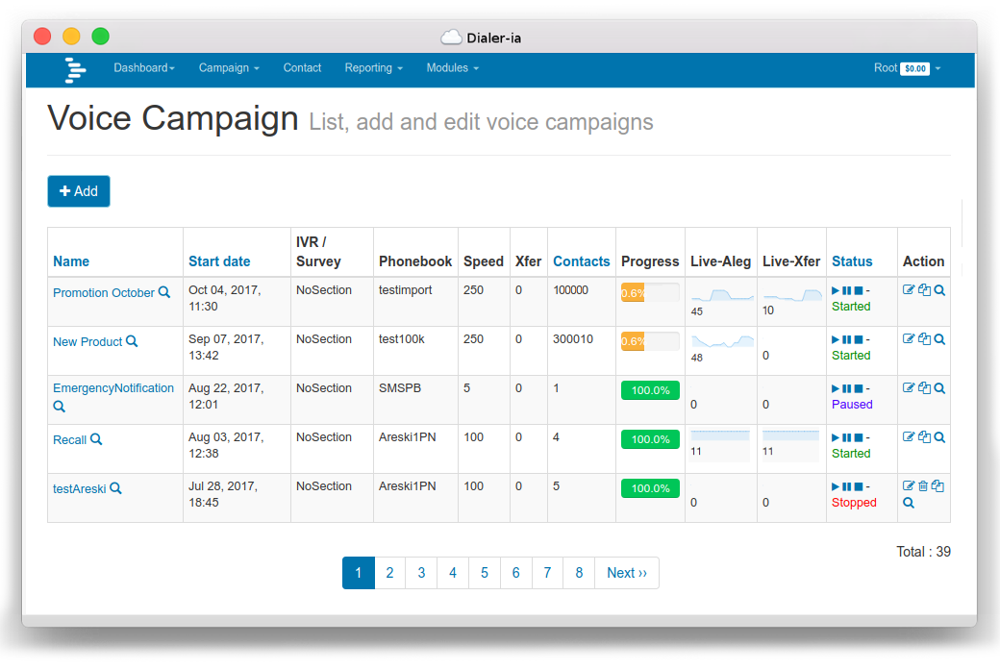

Introduction¶
| Web: | https://dialer.ai/ |
|---|---|
| Keywords: | predictive dialer, callcenter, autodialer, outbound callcenter, power dialer |
DialerAI is an SMS and voice broadcasting system built to support cloud based servers and can also work on standalone servers. It uses Freeswitch (VoIP Server) to make calls.
{kind=link}
Using very simple steps, DialerAI will help you create campaigns, add phonebooks, contacts, build audio messages and create complex telephony applications for voice broadcasting.
DialerAI provides an extensive set of APIs to easily integrate with third-party applications. Virtually every feature on the UI can be managed via the API’s.
Overview¶
DialerAI can be used by anyone who has a need for SMS broadcasting, mass outbound calling, voice broadcasting or providing outbound IVR Some of the potential uses for DialerAI are listed below.
The DialerAI may be used by either companies who wish to make calls on their own behalf, or by SaaS (Software as a Service) companies that want to provide bulk dialling and SMS broadcasting facilities to their own customers.
DialerAI can be configured on a single server, or for really high capacity or high speed systems, DialerAI can be configured across multiple servers.
Utility¶
DialerAI is loaded up with a list of telephone numbers that can be dialled sequentially at very high rates of calling depending on carrier capacity and hardware, potentially delivering many millions of calls per day.
When the called party answers the call, DialerAI passes the call to a telephony application that is custom designed to provide the desired behaviour.
Some examples of where DialerAI may be used follow:
- Lead Generation: Broadcast messages to contacts with a press one facility to transfer calls to a callcentre.
- Telecasting: Broadcast marketing or informational messages to customers and clients.
- Phone Polling, Surveys and Voting: Ring large numbers of people and present IVR options for either polling their opinions, interactive surveys, or taking their vote and record the results.
- Debt Control: Customers can be automatically reminded at intervals that they owe money, and an IVR menu presented to talk to the finance department or passed to a credit card capture IVR to pay over the phone.
- Dissemination of information via phone: DialerAI was originally designed to call large numbers of people and disseminate medical and health advice via cellphone in 3rd world countries where often, literacy levels are low. On a local scale, it can be used to disseminate information about forthcoming community events.
- Mass Emergency broadcast: Where there is a necessity to warn large numbers of people in a short space of time, such as weather warnings, evacuation notices and crime prevention.
- Subscription Reminders and Renewals: Where a company sells an annual subscription for a product or service, DialerAI can be configured to dial the customer, remind them that the subscription is due.
Features¶
Broadcasting Web-based SMS and Voice Broadcasting application. Distributed Runs on one or more machines. Supports broker clustering and HA when used in combination with RabbitMQ. You can set up new workers without central configuration. Concurrency Throttle Concurrent Calls. Scheduling Supports recurring tasks like cron, or specifying an exact date or countdown for when the task should be executed. Can re-try failed calls at a later time. IVR support Accommodates multiple IVR scripts with options to connect the user to another IVR/phone number on pressing a key. Web Interface It can be fully managed via a Web interface. Realtime web-based reports for call details and current calls. Import Contact Import contact details from a .csv file Multi-tenant It provies different roles for end-users, staff and administrators. With Appointment reminders module, it also provides Calendar Users. RealTime Control Control the speed of campaigns in realtime, as well as start, stop and pause buttons to control the campaigns Surveys IVR designer application enable the easy creation of survey application used. Survey reports can be consulted in real-time. Audio file Support multiple audio file formats : wav, mp3, ogg, gsm, etc… Text2Speech Supports powerful text2speech engines : Flite, Acapela, Cepstral, and any MRCP capable MRCP engine DNC Support Do Not Call List. Several DNC lists can be managed per campaign and per user. SMS SMS delivery, SMS Gateway support, SMS campaign. AMD Answering Machine Detection module is available. Rebranding & Whitelabelling Rebranding and design services to match your corporate imagee. USA Timezone Support Contact’s timezone identified from the telephone number and called according to their local time.
Pricing¶
DialerAI can be installed on either your servers (On-Premises) or on our servers (Rented) in our data centre. In either case, you provide the carrier to terminate your calls, if you need a carrier we can give some recommendations.
To see pricing for on-premises and rented servers, visit our pricing page at https://dialer.ai/pricing/
Contact Us¶
DialerAI can be contacted at:
- Email: sales@dialer.ai
- Tel (UK): +44 20 8068 2675
- Tel (USA): +1-415-937-6673